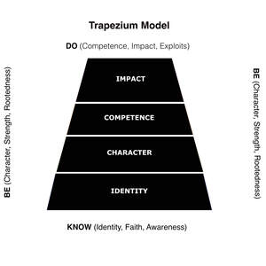

Trade Mark Journal No.2025/051 19 December 2025
UK00004304496 3 December 2025 (9,35,42,45)

A figurative representation of a vertical, four-segmented trapezium structure containing the four textual terms 'IMPACT', 'COMPETENCE', 'CHARACTER', and 'IDENTITY', with the terms arranged from top to bottom respectively. The mark is filed as a Series of Marks with three versions: Monochrome Version: Claimed in monochrome (black and white).
Registration of this trademark shall give no exclusive right to the exclusive use of the words 'IMPACT', 'COMPETENCE', 'CHARACTER', 'IDENTITY', 'BE', 'KNOW', or 'DO' except as they appear in the mark.
- Class 9
- Downloadable software for use in conducting, administering, scoring, and generating reports for psychometric, psychological, and professional development assessments; Downloadable mobile applications for conducting personal and professional assessments; Computer software and software programs used for data processing and analysis of assessment results and psychometric data; Downloadable electronic publications and digital media containing instructional and teaching materials in the field of personal and professional impact assessment.
- Class 35
- Administration of commercial assessment programs; Business management and consulting services in the field of professional development and organisational effectiveness; Compiling of information into computer databases for commercial use and market research.
- Class 42
- Providing temporary use of non-downloadable computer software (Software as a Service) for conducting, scoring, and reporting on psychological and professional assessments; Design, development, and hosting of assessment platforms, databases, and computer software for data analysis and diagnostic reporting in the fields of personal development and organisational effectiveness; Scientific research and analysis services relating to human resources and professional impact.
- Class 45
- Licensing of intellectual property relating to business methods, corporate training, and assessment models.
Pathfinder Educational Limited